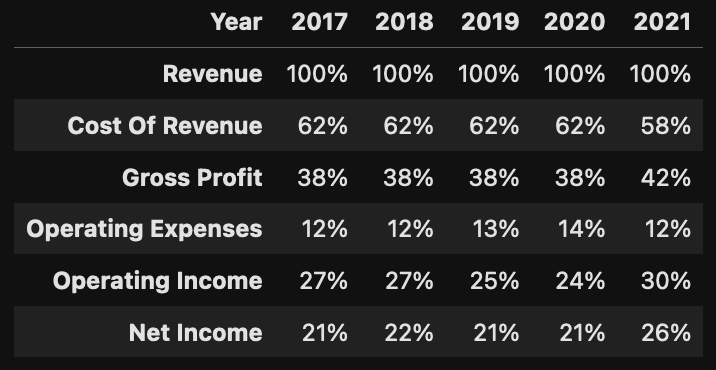
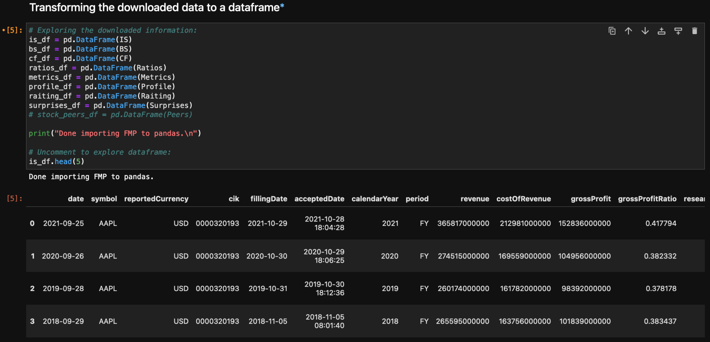
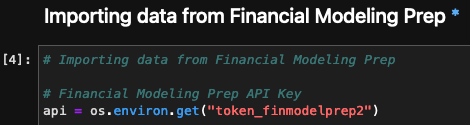
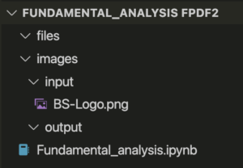
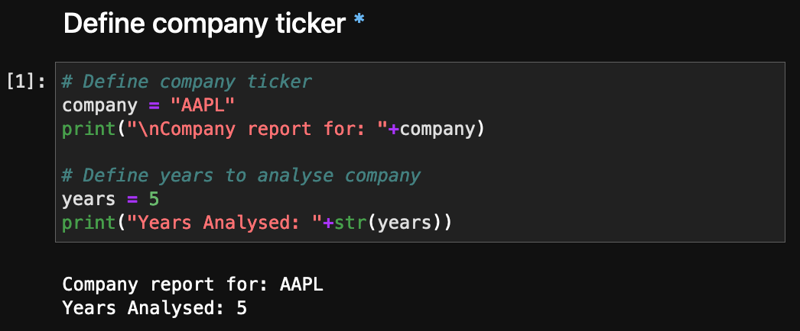

Tabla de Contenidos
Esta publicación explicará cómo construí un script de Python que crea un reporte financiero de una compañía pública en formato PDF. Su propósito es usarlo como parte de un proceso de selección de acciones para un portafolio de inversión.
Explicaré en detalle cómo funciona el reporte y cómo fue creado. Si quieres ir directo al código fuente, puedes ir al repositorio de GitHub here.
También puedes ver algunos reportes de ejemplo creados con el script.
El objetivo del reporte financiero
Al invertir en acciones, es mejor invertir en compañías rentables que preserven el capital de los inversionistas y lo incrementen con el tiempo.
Para lograr eso, debemos examinar la posición financiera de una compañía usando estados financieros y otras métricas financieras.
Afortunadamente, las compañías públicas están obligadas a reportar su información financiera al público periódicamente.
El objetivo del proyecto fue producir un reporte automático con Python que permita a los inversionistas analizar cualquier compañía pública rápidamente y tomar decisiones de inversión más inteligentes.

La diversificación es la única manera de reducir el riesgo sin disminuir los rendimientos.
Este enfoque automatizado ahorra horas de recopilación y análisis manual de datos, mientras garantiza consistencia y precisión en los reportes financieros.
Qué hace el script de Python
El script de Python crea un reporte financiero en PDF mostrando 5 años de historial de la compañía analizada.
Aquí hay un resumen del contenido del reporte:
- Descripción de la compañía
- Estados financieros de los últimos 5 años:
- Estado de resultados
- Balance general
- Estado de flujos de efectivo
- Métricas financieras importantes:
- Ratios de deuda
- Ratios de rentabilidad
- Ratios de eficiencia
- Ratios de mercado
- Otras métricas clave
- Gráficas:
- Income statement
- Balance sheet
- Cash flow statement
- Usos del capital
The information is shown in both nominal terms ($), expressed in millions of USD, as a percentage of income, or as a percentage of assets (depending on the metric).

Un ejemplo de un estado de resultados expresado en millones de USD

Un ejemplo del mismo estado de resultados expresado como porcentaje de ingresos
Codificando el reporte
El reporte financiero se ejecuta corriendo un archivo llamado 'fundamental_analysis.ipynb'. Los archivos ipynb son archivos de Jupyter notebook que pueden ejecutar scripts de Python y son muy populares en ciencia de datos.
Jupyter notebook vs script de Python
Elegí un Jupyter notebook en lugar de un script de Python para ejecutar el código del reporte por su flexibilidad. Los notebooks permiten ejecutar partes del código y pueden mostrar la información mientras se ejecuta, por lo que funciona bien como depurador.

Aquí puedes ver cómo se puede explorar el data frame, mostrando de un vistazo los datos disponibles.
Encontré que algunos de los datos financieros de la API aún necesitan ser limpiados y ocasionalmente producen errores.
Con el notebook, puedo revisar esa sección específica sin tener que llamar a la API varias veces (que está limitada en la versión gratuita).
El notebook también contiene un índice en la parte superior en markdown, que uso para navegar el script.
Cada encabezado de sección contiene un símbolo de asterisco '*' que enlaza de regreso al índice si haces clic en él.

Imagen del índice del archivo de Jupyter Notebook
Obteniendo datos de la API
Para ejecutar el script del reporte financiero, primero tuve que obtener un token de API de Financial Modeling Prep.
Financial Modeling Prep es un proveedor de datos de acciones, que cubre los mercados NYSE, NASDAQ, AMEX, EURONEX, TSX, ÍNDICES, ETFs, FONDOS MUTUOS, FOREX y CRYPTO. Si estás interesado en inversión en acciones o trading deberías echarle un vistazo.
Tienen una versión gratuita, que permite 250 solicitudes por día y cubre todos los mercados estadounidenses, mientras que una suscripción de pago da cobertura al resto de las acciones internacionales y un número ilimitado de solicitudes.
Puedes agregar la clave de API directamente en tu script en la siguiente sección, pero se recomienda guardarla como una variable de entorno para mayor seguridad. Esto es especialmente importante si planeas subir tu código a un repositorio público.

Configuración de clave API para acceder a datos financieros
Para llamar a la API, usé una librería de Python llamada requests, que obtiene los datos y guarda la información como un objeto JSON.
Transformaciones de datos con Pandas
Para transformar el objeto JSON con datos financieros usé Pandas, una librería de Python de código abierto hecha para análisis de datos.
Algunas de las transformaciones que hice fueron:
- Filtrar solo la información necesaria para cada tabla financiera.
- Mostrar los datos en millones de USD para mostrar números que son más fáciles de entender.
- Transponer los datos para mostrarlos de la misma manera en que normalmente se presentan los estados financieros.
- Dividir los datos y expresarlos como ratios.

Un ejemplo de data frame mostrando ratios de mercado para una compañía

Un ejemplo de tabla de data frame mostrando ratios de eficiencia para una compañía
Una vez que los datos estaban en el formato correcto, usé una librería llamada dataframe_image para guardar las tablas como archivos PNG.
Visualizaciones de datos usando Plotly
Usé la Plotly librería para crear gráficas que pueden mostrar una imagen clara de la salud de la compañía de un vistazo.
El nivel gratuito de Financial Modeling Prep devuelve 5 años de datos, lo cual puede ser útil para detectar tendencias en las compañías como puedes ver a continuación.

Una gráfica mostrando ventas, ganancias y gastos de interés de una compañía de los últimos 5 años

Otra gráfica mostrando los activos, deudas y capital de una compañía de los últimos 5 años
Creando el reporte PDF usando FPDF2
Para crear el reporte, decidí usar un archivo PDF en lugar de un formato basado en web.
Los PDFs muestran el mismo contenido independientemente del sistema operativo, dispositivo o software, son convenientes para compartir y son fáciles de proteger. También son la forma más común de compartir datos en un ambiente de negocios.
Usé la FPDF2 library, an open source python library that allows creating custom PDFs.
La librería es fácil de entender, muy fácil de personalizar y excelente para este tipo de situación.
Ejecutando el script para crear un reporte
Después de obtener el token de API, para crear un reporte, configuré la estructura de archivos e instalé las librerías de Python necesarias.
Instrucciones para configurar la estructura de archivos:
- Descarga el script.
- Descarga las dependencias requeridas.
- En la misma carpeta que el script, agrega una carpeta llamada 'images'.
- Dentro de la carpeta 'images' agrega dos carpetas llamadas 'input' y 'output'.
- Dentro de la carpeta 'input', agrega tu logo.
- El logo actual se llama BS-Logo.png.
- El logo actual es: ancho 306 píxeles, alto 188 píxeles.
- Cuando sustituyas, asegúrate de actualizar el nombre del archivo dentro del script o nombra tu archivo BS-Logo.png

Imagen de la estructura de archivos
Instalando dependencias de Python
A continuación hay una lista de las dependencias requeridas por el script:
Todos los módulos están disponibles en anaconda y pip.
Tuve algunos problemas usando el FPDF2 módulo de anaconda, así que terminé instalando todo desde pip.
Tuve algunos problemas ejecutando Kaleido desde un entorno virtual, así que instalé las librerías en el entorno principal de Python.
Seleccionando el ticker de la compañía
Para ejecutar el reporte, simplemente cambia el ticker de la compañía y ejecuta todas las celdas.

Simplemente cambia el ticker de la compañía y ejecuta todas las celdas
Ocasionalmente, el script mostrará un mensaje de error durante la ejecución.
Algunos problemas comunes que encontré son:
- Elegir el ticker incorrecto (las compañías no estadounidenses solo están disponibles en la versión de pago).
- Información incompleta (a veces faltan datos de un año).
- Valores faltantes a veces reportados como valores NA, valores cero, u otro número.
- A veces faltan imágenes de la compañía.
- A veces falta una métrica (ej. nombre del CEO)
Si obtienes un error, explora los datos para ver si puedes corregirlo. Si no puedes, siempre puedes comentar esa sección y obtener el resto del reporte.
Una vez que tengas el código configurado, ejecutar el script es sencillo:
Python
# Initialize the report generator
generator = FinancialReportGenerator(api_key='your_api_key_here')
# Fetch data for a company (e.g., Apple)
ticker = 'AAPL'
company_data = generator.fetch_company_data(ticker)
# Calculate financial metrics
metrics = generator.calculate_financial_metrics(company_data)
# Create visualizations
charts = generator.create_visualizations(company_data, metrics)
# Generate PDF report
report_path = generator.generate_pdf_report(ticker, company_data, metrics, [charts])
print(f"Financial report generated: {report_path}")
Algunos reportes financieros de ejemplo
A continuación hay algunos enlaces a reportes de compañías que hice con el script.
Mejoras al reporte financiero
Hay muchas maneras en que este reporte podría mejorarse.
Aquí hay algunas ideas:
- Generar un archivo de Excel junto con el PDF.
- Analizar trimestres en lugar de años completos.
- Analizar años móviles.
- Analizar más años a la vez.
- Graficar ratios PE históricos.
- Mejorar la presentación del reporte.
- Comparar la compañía vs. su sector.
Esta lista no es exhaustiva, más bien es solo un punto de partida.
Si planeas usar el reporte para propósitos de inversión, recuerda que el análisis fundamental es solo parte de un proceso de selección de acciones. Otras métricas, tanto cualitativas como cuantitativas, necesitan ser tomadas en cuenta antes de invertir en una compañía.
Reflexiones finales
Espero que hayas disfrutado la publicación y que te haya sido útil.
Si decides probarlo, no dudes en contactarme si tienes algún problema o sugerencia.
You can check out my other projects here.
Pablo.
Get in touch!
I'm currently open to work and I'd be happy to chat.
Feel free to reach out if you are interested in what I can bring
to your project or team.